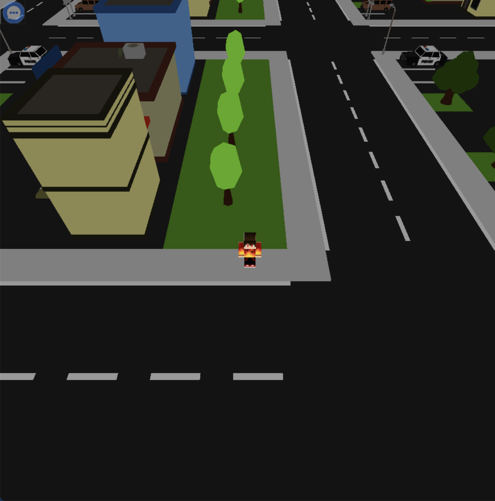
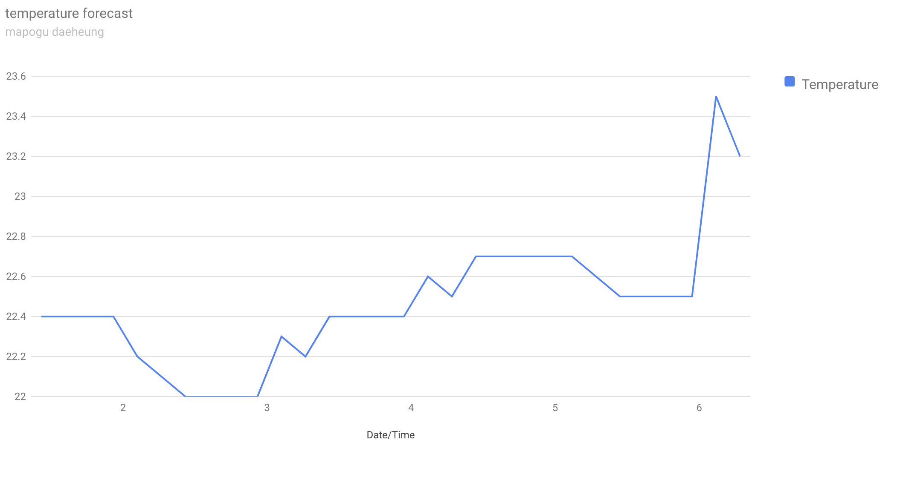

WebMetaverse

게더타운(Gather.town)과 같이 가상세계에서 유저들과 교류할 수 있는 웹페이지
기술 키워드 : html, css, javascript, node.js, socket.io, WebGL, Threejs, MySQL
내가 그린 그림을 움직이는 3D로 만들어보자


애플리케이션 RakugakiAR과 같이 user가 그린 그림을 ar을 이용하여 움직이는 3D 캐릭터로 만드는 웹 개발
url : 위 프로젝트는 Naver Apollo CIC의 멘토링을 받아 진행한 프로젝트로서 Github private repository로 진행되었습니다.
(프로젝트 이력 공개에는 문제가 없으며, 하단 요약 내용란을 클릭하시면 요약 내용을 보실 수 있습니다!)
프로젝트 요약 내용 보기(클릭하세요)
프로젝트 요약 내용 보기(클릭하세요)
기술 키워드 : html, css, javascript, OpenCV, WebGL, Threejs, WebXR
apple iphone 12 pro

apple iphone 12 pro 웹페이지 클론 코딩
기술 키워드 : html, css, javascript, TweenMax, ScrollMagic
waker
머신러닝을 통한 졸음 운전 방지 기능을 추가한 네비게이션 애플리케이션 개발
기술 키워드 : MariaDB, Django, Arduino sketch, Anaconda, Jupyter notebook, OpenCV, Android Studio

temperature data graph(my university)

기상청 api를 활용하여 서버 및 데이터 구축 실습
기술 키워드 : AWS, nodejs, Expressjs, PM2, MySQL